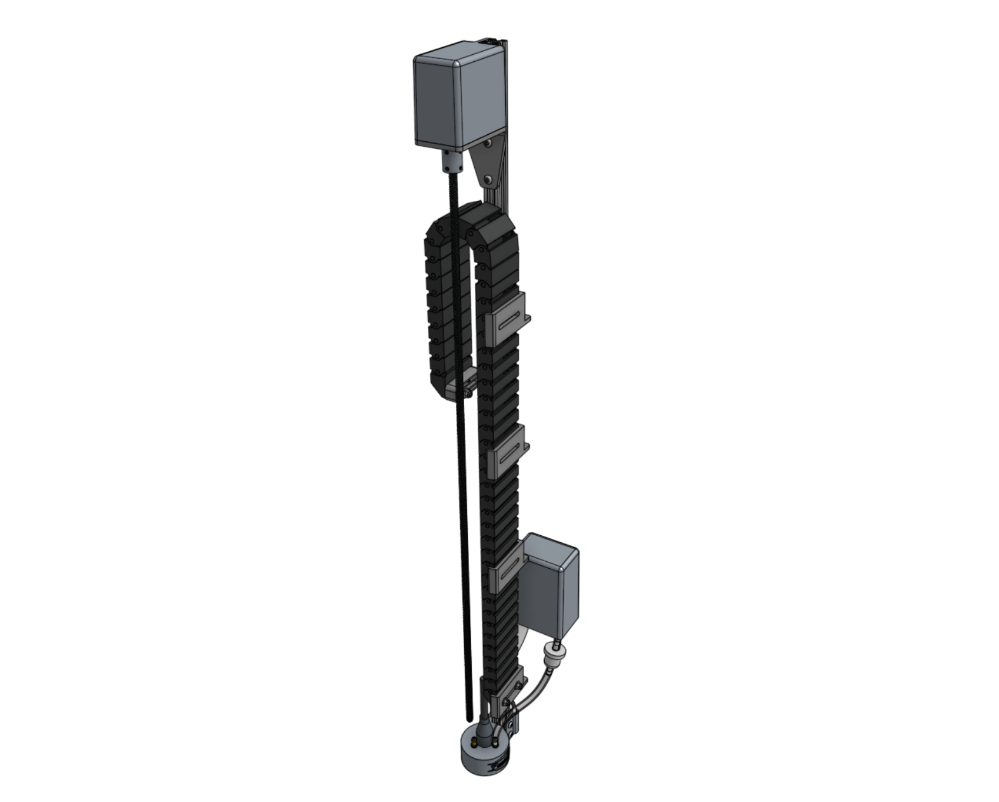

Z-Axis
{kind=link}
Step 1: Attach the stepper motor to the Z-axis motor mount
Attach a motor to the z-axis motor mount using four M3 x 12mm screws.
The motor and encoder connectors should be facing the back flange of the mount.

Step 2: Attach the motor mount to the Z-axis extrusion
Attach the z-axis motor mount to the z-axis extrusion using a 60mm nut bar and M5 x 10mm screws.
The top face of the motor mount should be 80mm from the end of the extrusion.

Step 3: Attach the shaft coupling
Slide the shaft coupler onto the motor shaft and tighten the top screw with the 2.5mm hex key.

Step 4: Attach three cable carrier supports
Attach three vertical cable carrier supports to the z-axis extrusion using 40mm nut bars and M5 x 10mm screws.
Space the supports along the extrusion as shown.

Step 5: Attach the vacuum pump cover
Attach the vacuum pump cover to the z-axis extrusion using two tee nuts and M5 x 10mm screws.
The cover should be butted up against the lowest cable carrier support.

Step 6: Attach the vacuum pump
Fasten the vacuum pump to the vacuum pump mount using two 200mm zip ties.
Then attach the vacuum pump mount to the z-axis extrusion using a 60mm nut bar and two M5 x 16mm screws.
The mount should be butted up against the vacuum pump cover.


Step 7: Attach one more cable carrier support
Attach one more vertical cable carrier support using a 40mm nut bar and two M5 x 10mm screws.
The support should be butted up against the vacuum pump mount.

Step 8: Attach the z-axis to the cross-slide
Screw the leadscrew halfway into the leadscrew block.

Slide the z-axis extrusion through the v-wheels on the cross-slide until the leadscrew inserts into the shaft coupler.
Then tighten the coupling’s lower screw with the 2.5mm hex key.

{kind=link}
Step 9: Install the hardstops
Attach the z-axis hardstops onto the back side of the z-axis extrusion approximately 200mm from the top of the extrusion and 100mm from the bottom of the extrusion using M5 x 10mm screws and tee nuts.
Later, you can quickly adjust these to physically prevent AgriBot from moving too low or too high within its working space.


Step 10: Add the vertical motor housing (optional)
If you plan on stopping assembly after this page, it is recommended to attach the vertical motor housing to the z-axis extrusion using M5 x 10mm screws and tee nuts now.
This will protect the motor from rain and other hazards until you resume assembly at a later point.
Once you resume assembly, you will need to remove the housing.
If you do not plan on stopping the assembly process now, you can skip this step and install the housing after the z motor and encoder cables have been connected in the next step.